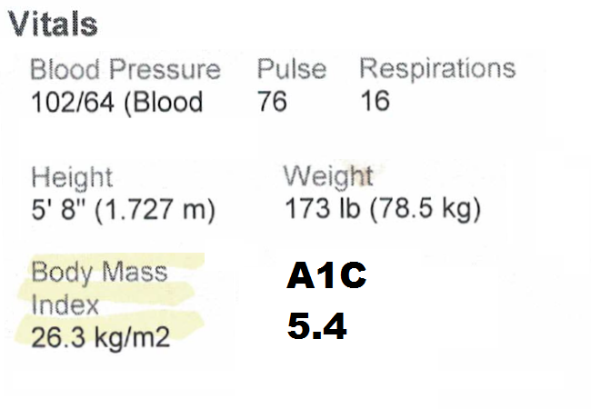

Diets never kept me thin. I've tried lots of diets over the years. They all worked, but only temporarily. They got me thin, but they never kept me thin. The worst diets were the calorie-counting diets. I just could not indefinitely maintain precise records. The best diets were the simple ones, like Atkins. They did not work long term, either, but at least I did not waste a lot of time managing the process.
Fasting never kept me thin. For a while I tried on a regular basis going 1, 2 or even 3 days in a row without eating. At one point I fasted every other day. On the days I ate, I ate only one (big) meal. This worked, but only temporarily. As soon as I fasted my way down to my goal weight, went back to my previous eating habits and I ballooned back up again. As I got ever fatter, I tried to hold down my weight by fasting as much as I could. I would try not to eat, then I would get really hungry, then I would gorge myself on whatever was convenient, usually drive-thru food and easy-to-open packages of junk food. In the end fasting proved ineffective, a short term solution to a long term problem.
Exercise never kept me thin. I concluded I could not control my eating, so I tried a new strategy: exercise. I pedaled daily on a stationary bike, while maintaining a junk food diet. Today I know exercise is very good for me, but not for weight loss. Research shows that diet, not exercise, most influences weight loss [1].
Exercise as a weight loss plan failed miserably. I was not athletic enough to maintain a healthy weight by gorging myself, then exercising off the calories. It takes 1 hour for a 200-pound person to burn 279 calories [2]. Sometimes I ate a whole pizza for lunch, 8 slices at 280 calories per slice [3]. I would have to exercise 8 hours a day just to burn off that one pizza! The math was clear: exercise could not possibly work in my case. I had to change my eating behavior. There was just no other way.
Commercial weight loss programs never kept me thin. I tried Weight Watchers. It did not even come close to working. The focus was always on the food, not on how to control the desire for food. I cannot find any recent evidence that commercial programs work permanently. The only study I found published in the last decade suggests that maybe commercial programs do not cause harm [4].
The jury is out on food addiction groups. There exists no reliable research on the effectiveness of Twelve Step food addiction recovery groups [5]. I used to be a member of Overeaters Anonymous (OA) [6]. I met one person in OA who lost over 100 pounds and kept it off 9 years so far. But OA never worked for me personally.
Right now I am a member of Food Addicts in Recovery Anonymous (FA) [7], a spinoff of OA. I have met at least a dozen people in FA who have lost over 100 pounds and kept it off over 10 years. I met one fellow who lost over 200 pounds and kept it off over 15 years. As of September 2017, my doctor reported my new BMI was 26.3, overweight, but not obese. The doctor said I lost 55 lbs (25 kg) in 5.5 months. Best of all her new diagnosis reported no diabetes, no hypertension. See Table 1.
In the FA program I have continued to lose weight. As of February 2017, according to my home scale, today I am normal weight, not even overweight. I have a BMI of 24.2 [8], normal.
Of course, I am delighted with these numbers, but I am cautious. FA has produced the best results so far, but the goal is to keep the weight off permanently. I hope I will stay in the normal BMI range for at least a year. We'll see.
| Apr. 3 (Before) | Sept. 15 (After) |
|---|---|
|  |